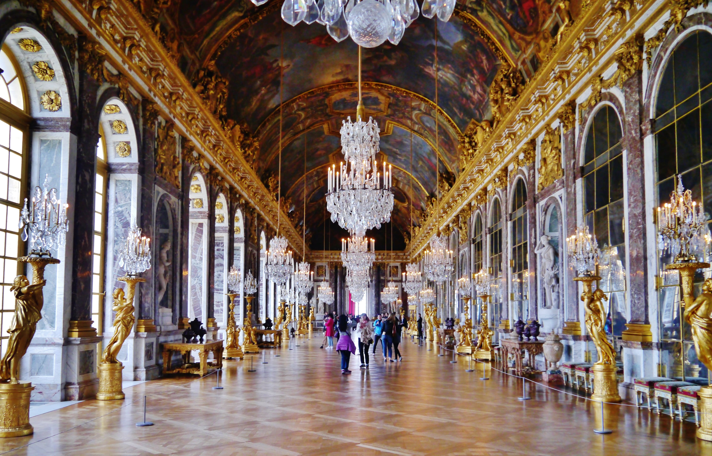

Descubra lugares legais para você visitar!
Torre Eiffel, Paris
Um ícone globalmente reconhecido e um marco emblemático da França, a Torre Eiffel é uma visita obrigatória para qualquer pessoa que visite Paris. Além de sua impressionante estrutura de ferro, os visitantes podem subir até o topo para desfrutar de vistas deslumbrantes da cidade das luzes, especialmente ao pôr do sol.

Palácio de Versalhes, Versalhes
Uma obra-prima da arquitetura e um testemunho do luxo da monarquia francesa, o Palácio de Versalhes é uma visita obrigatória para os entusiastas da história e da arte. Os visitantes podem explorar os suntuosos salões, os deslumbrantes jardins e aprender sobre a rica história do local.
Museu do Louvre, Paris
Uma obra-prima da arquitetura e um testemunho do luxo da monarquia francesa, o Palácio de Versalhes é uma visita obrigatória para os entusiastas da história e da arte. Os visitantes podem explorar os suntuosos salões, os deslumbrantes jardins e aprender sobre a rica história do local.
Rio Sena, Paris
Cortando o coração de Paris, o Rio Sena é uma das principais atrações da cidade, oferecendo cruzeiros encantadores que proporcionam vistas deslumbrantes de monumentos famosos, como o Louvre, a Catedral de Notre-Dame e a Torre Eiffel. Suas margens também são ideais para passeios relaxantes, picnics e contemplação da paisagem urbana parisiense.